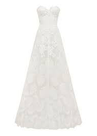
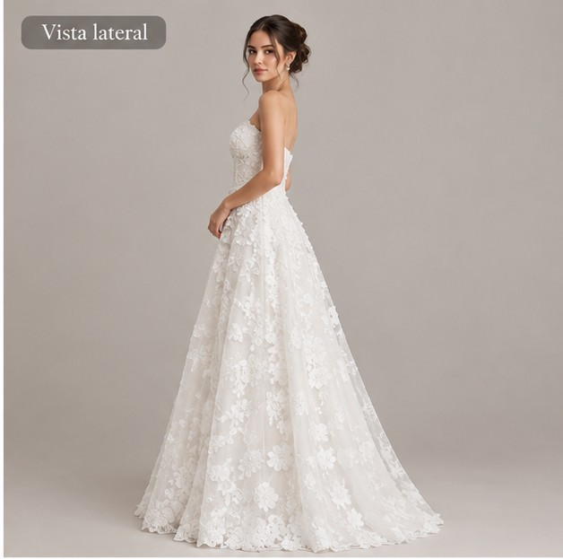
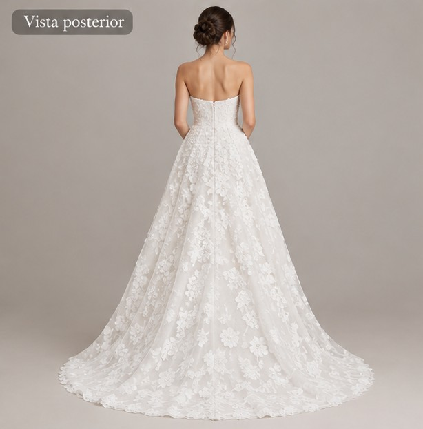
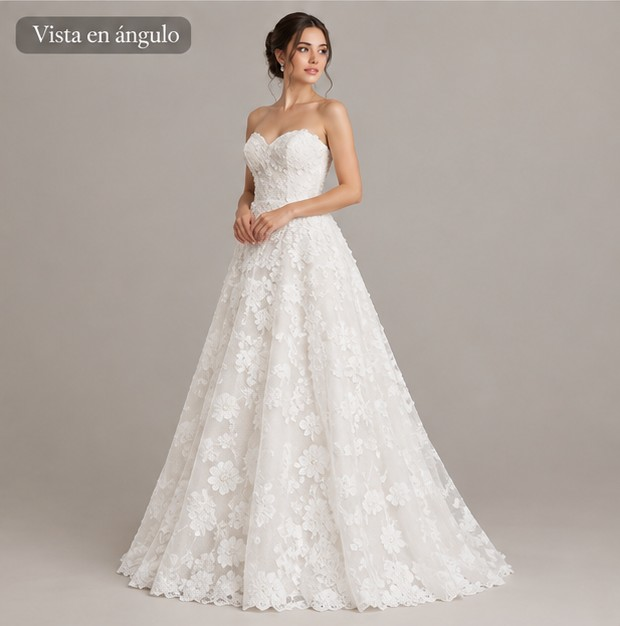

S/ 950.00
Exquisito vestido de corte A que favorece la silueta, ofreciendo una caída fluida y elegante desde la cintura.
Presenta un romántico escote corazón estructurado que realza el busto, con un diseño sin mangas y sin tirantes que deja los hombros y la clavícula al descubierto.
El cuerpo y la falda están completamente cubiertos por un intrincado y delicado patrón de encaje floral, creando una textura rica y detallada con un fondo sutil en tono marfil o blanco suave.
La falda, de corte A clásico, presenta un ligero fruncido o pliegue en la cintura para dar volumen, permitiendo que el patrón de encaje se luzca en toda su extensión hasta el dobladillo.
✅ Compra realizada exitosamente